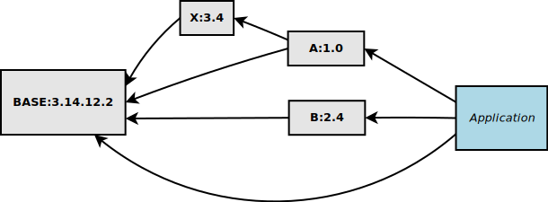
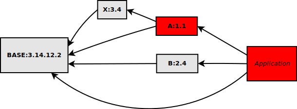
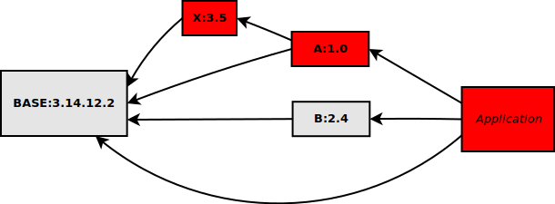
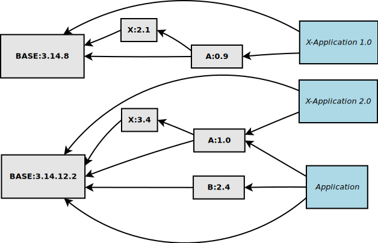
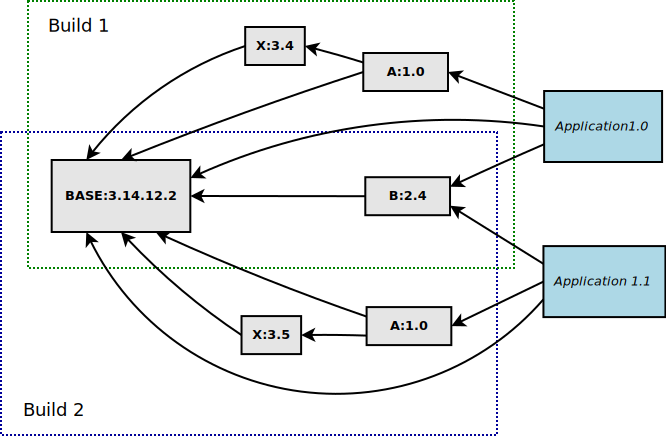
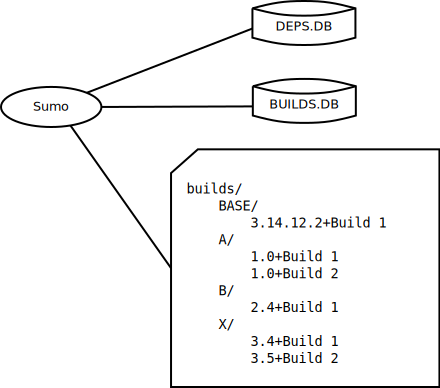

Introduction
The following text provides a short introduction of the tool.
If you want to get an impression how you use sumo in an application look at Using sumo in your application.
If you want to get an impression how to change and develop a device support with sumo look at Develop support modules with sumo.
The problem
When you develop EPICS applications you usually need some EPICS support modules to interface your hardware.
The following picture gives an impression of a simple example:
You have the following dependencies here:
module or application |
depends on |
|---|---|
application |
BASE A B |
A:1.0 |
BASE X |
B:2.4 |
BASE |
X:3.4 |
BASE |
Note that your application depends indirectly on module X since this is needed by module A. This is probably not shown in your applications module configuration in file “configure/RELEASE”.
New version of a direct dependency
If you get a newer version 1.1 of module A, which is directly used by your application, you have to rebuild A and then your application. The following picture shows in red color which modules have to be recompiled:
This can be done relatively easy.
New version of an indirect dependency
If you get a newer version 3.5 of module X however, you have to rebuild X, A and then your application exactly in this order.The following picture shows in red color which modules have to be recompiled:
There are several problems here:
How do you find all modules that use module X ? There is no easy way to find them all aside from a text search of file configure/RELEASE in all other modules.
How do you handle the new compiled version of module A ? It has the same sourcecode as before, except for the file configure/RELEASE. Since it uses a different version of X it may behave differently. Do you give it a new version number although it’s source hasn’t changed ?
How do you know in your application, which version of X it uses ? Since your application doesn’t use X directly, this module is not mentioned in file configure/RELEASE there.
The overall picture
A further problem is that you probably have to keep many old versions of modules for other applications or even older versions of the same application that still run on some IOCs. Your overall picture of modules is more like the following picture (in reality it is much more complex):
The solution
Builds
The problems above are solved by sumo. This tool creates builds, which are guaranteed to be consistent and complete sets of compiled modules. This image illustrates the concept:
You see that we have various versions of modules X, A and B. Each version of a module belongs to one or more builds:
module |
builds |
|---|---|
BASE:3.14.12.2 |
Build 1, Build 2 |
A:1.0 built with X:3.4 |
Build 1 |
A:1.0 built with X:3.5 |
Build 2 |
B:2.4 |
Build 1, Build 2 |
X:3.4 |
Build 1 |
X:3.5 |
Build 2 |
A special case is module A, we have version 1.0 of the module twice, one is compiled with X:3.4 and one is compiled with X:3.5. Both have source version 1.0 but they are not identical due to different versions of module X.
In the image, the areas of Build 1 and Build 2 overlap. This illustrates that compiled modules are re-used when possible. When Build 2 is created after Build 1, module BASE for example, is not compiled again.
Database files and directories
Sumo uses two database files and a build directory to organize the data and the builds. Here is an overview:
DEPS.DB is a JSON file which contains all known versions of modules, their source (usually a software repository) and their dependencies.
BUILDS.DB is a JSON file which contains the versions of modules of each build and information where a module from one build is reused in another build.
The build directory contains in a hierarchical directory structure all compiled modules. At the first level, directories are named after module names. At the second level, directories are named after the version of a module and the name of it’s build separated by a ‘+’ character.
Creating a build
A build is usually created with the command:
sumo build new
Sumo examines the module specification of your application, usually the file
configure/MODULES, and creates a build that contains all the needed modules
with the specified version. The process is as follows:
Create directories for all modules that have to be compiled and check out the sources from the version control system.
Create the file
configure/RELEASEin every module. Also ensure that whenever possible, modules from existing builds are reused by corresponding entries in fileconfigure/RELEASE.Create a makefile in the “builds” directory that ensures that modules are compiled in the correct order.
Run the makefile.
On success, mark the build in file BUILDS.DB with state “testing”.
Using a build
You use a build in your application with the command:
sumo build use
Sumo examines the module specification of your application, usually the file
configure/MODULES, and searches BUILDS.DB for a build that contains
all needed modules with the specified version. If it succeeds, it creates a
file configure/RELEASE with all the needed entries to use these modules.
For more details on this see also Using sumo in your application.
The implementation
The functions described above are implemented with two programs: